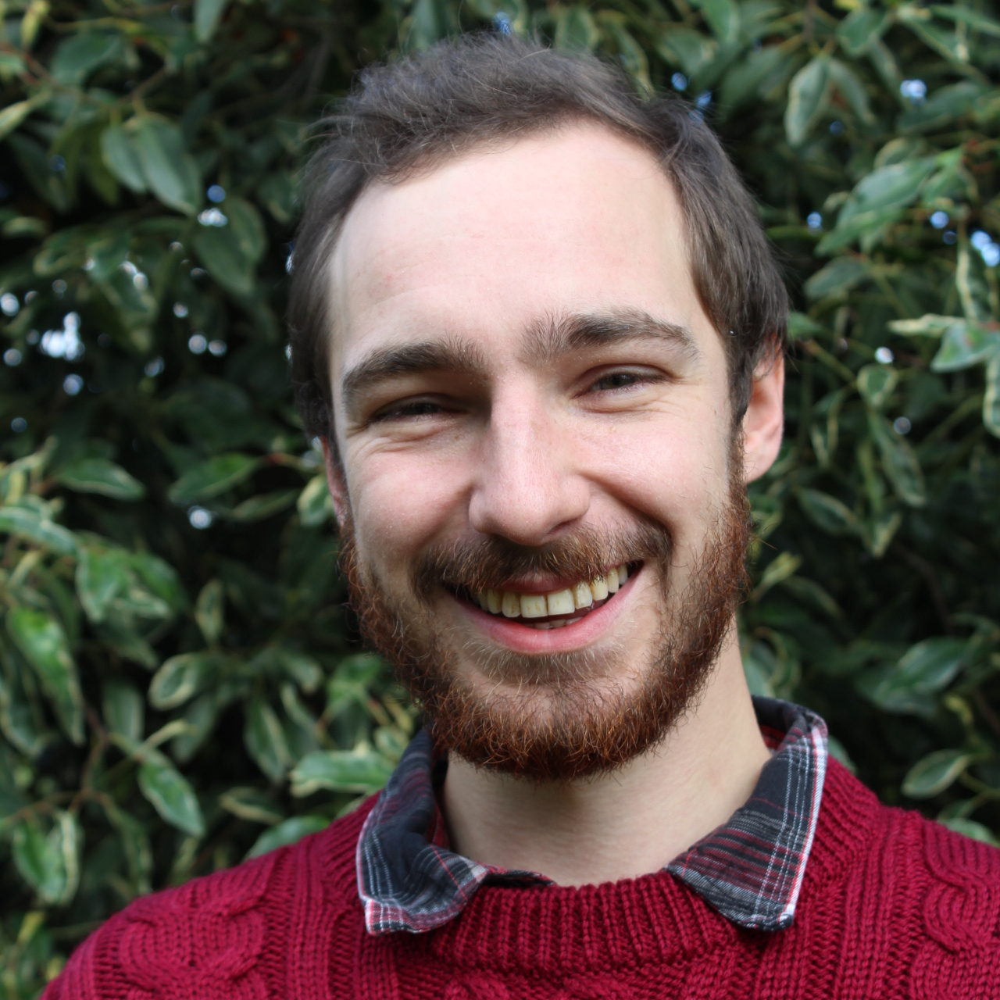

    <!-- About Section -->
    <section id="about" class="container content-section text-left">
        <div class="row">
            <div class="col-lg-10 col-lg-offset-1">
                <h2>About Me</h2>
                
                <p>I am a computational ecologist interested in imaging biology, mechanistic modelling, and spider webs.</p>
                <p>I am currently in the final year of my PhD in the biodiversity lab led by James Rosindell at Imperial College London. I am presently funded by NERC as a part of the QMEE CDT program. Prior to this I earned my Bachelor's in Zoology at the University of Leeds and my Master's degree at Imperial College London in Computational Methods in Ecology and Evolution (CMEE).</p>
            </div>
        </div>
    </section>
